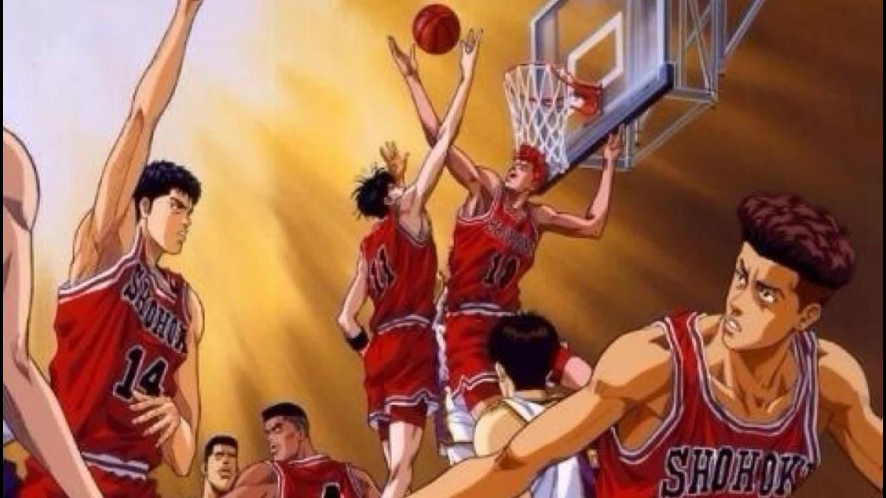
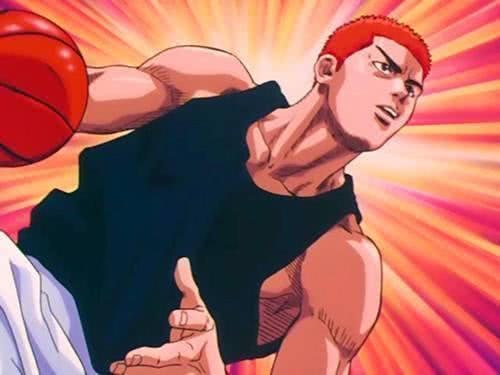
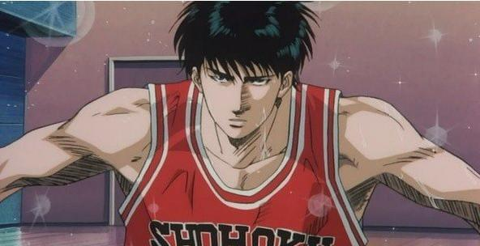
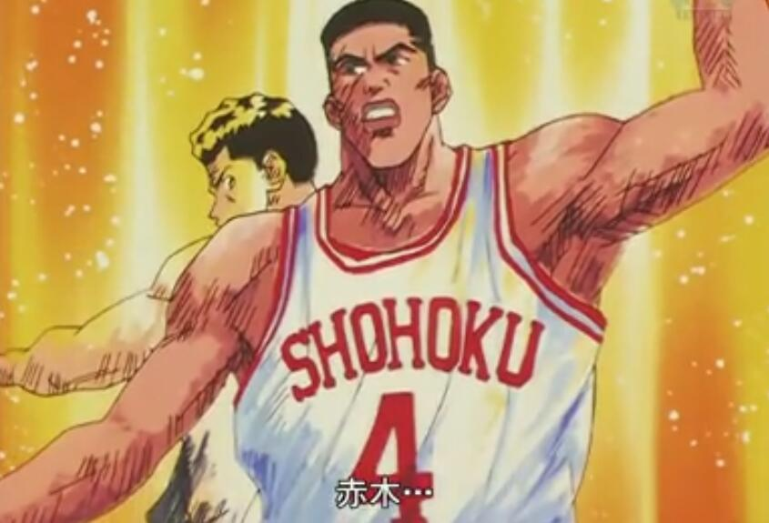
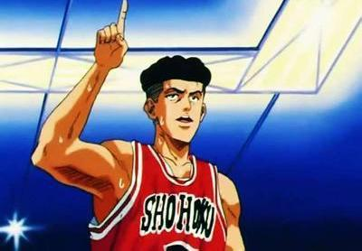
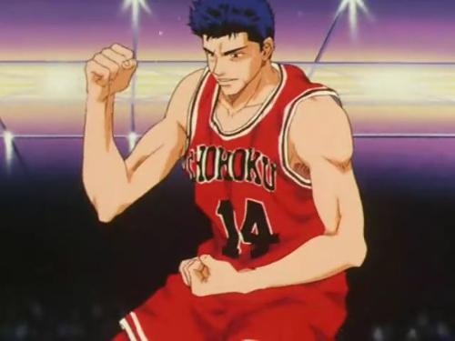

《灌篮高手》是日本漫画家井上雄彦以高中篮球为题材创作的漫画作品。
漫画讲述了为讨好同级暗恋对象赤木晴子的欢心，毫无篮球基础的樱木花道加入湘北高中篮球队。在赤木刚宪和同级天才流川枫的刺激下，樱木花道实力飞速进步，逐渐成湘北高中篮球队不可缺的主力球员。
在初中时期被50名女学生甩过的红发不良少年樱木花道升入湘北高中之后，对偶然间认识的同年级女生赤木晴子一见钟情。在晴子的期待下，对篮球规则一窍不通的花道加入到篮球队。在晴子的哥哥——篮球队队长赤木刚宪的严格训练以及对“超级新人”流川枫燃起的对抗意识的驱使下，花道身体中潜藏的才能终于得以显现，同时，他也被篮球这项运动的魅力所征服。
在和强劲的对手陵南高中的练习比赛之后，身材矮小却有着灵活运动能力的宫城良田以及曾经在初中时期获得县MVP称号的三井寿也回归球队。实力大幅提升的湘北高中篮球队开始为全国高中联赛神奈川县预选赛进行准备。就这样，以樱木花道为首的湘北高中篮球队迎来了他们人生中最为炽热的一个夏天。 
樱木花道10号大前锋

1年7班，4月1日生，188cm→189.2cm 83kg。
和光中学毕业，初中三年创下连续被50个女生拒绝的纪录。别看他一头红色的头发，其实性格很内向
。和粗犷的外表相反，是个无药可救的“单纯王”，很容易因为别人的奉承而得意忘形。
对赤木刚宪的妹妹晴子一见钟情，为了讨晴子欢心而加入篮球队。拥有超人的体力和瞬间爆发力，弹跳力和力量同样让人难以置信，自称“天才篮球手”。湘北队的超级问题儿童，和死对头流川枫是队中出名的一对活宝。本来是个门外汉，但凭借对篮球的出色领悟力，不论教给他什么东西吸收得都很快，这不但让他以难以置信的速度成长，还一跃成为全县数一数二的篮板球高手，有“篮板王”之称。作为对跟海南队比赛中失误的惩罚，后来还把头发剪成了板寸。
流川枫11号小前锋

1年10班，1月1日生，187cm 75kg。
富丘中学毕业，湘北队的王牌。富丘中学篮球部的队长，初中时代就已成为篮球明星，故而在读高中后有“超级新秀”之称，再加上长得很帅，很受女孩子的欢迎，是湘北高中女生们心目中的偶像。进攻的鬼才，在篮下和外围都能够得分
。在县预选赛上，被评为新人王和全县5强，场均得分30.3分，仅次于海南队的阿神
。缺点是太过英雄主义
。平时总是沉默寡言，面无表情，表面上好像对什么事都无动于衷，但内心其实非常好胜，拥有不服输的性格和坚强的意志
。爱好是睡觉，不管是什么人，只要妨碍他睡觉就绝不轻饶。
队长赤木刚宪4号中锋

3年6班，5月10日生，193(高1)→197cm 88(高1) →90→93kg。
北村中学毕业，从小学就迷上了篮球，对篮球倾注了所有热情，梦想是“称霸全国”。神奈川县最优秀的中锋，在全日本也是一流。很多专家都评价，比起强有力的进攻来，铜墙铁壁般的防守技术才是他最强大的地方。赤木篮下的防守技术(包括篮板球)在高中篮球界都是出类拔萃，有“篮下金刚”之称，但进攻方式却很单调。招牌技是“大猩猩灌篮”和“活拍苍蝇”。有着强大的领导能力，是湘北队的精神支柱。但因为身边没有好帮手的缘故，一直被埋没到现在，直到高3时樱木、流川的出现，和宫城、三井的回归，“称霸全国”的梦想才真正有可能实现。平常很和蔼可亲，但一提篮球就像变成另外一个似的。非常爱干净，对训练要求非常严格，讨厌歪门邪道。全国联赛之后，保送深体大的事情告吹，为迎接高考而隐退。
宫城良田7号控球后卫

2年1班 ，7月31日生，168cm 59kg。
对彩子一片痴心的问题少年。上中学的时候就开始打篮球，在进入高中之后本来很犹豫是不是要继续打篮球，但在体育馆第一次见到彩子时就喜欢上了她，为了彩子加入到篮球队
。因为与樱木有相同的遭遇而成为死党。虽然个子不高，但身手相当敏捷，速度如电光火石一般。不会从外围投篮。总是容易冲动，导致看不清周围的情况
，这时彩子就是他的稳定剂。在赤木引退后，继任湘北队的新队长。
三井寿14号得分后卫

3年3班，5月22日生，176(高1) →184cm 63(高1)→70kg。
武石中学毕业，湘北队的3分球投手。初三时率队夺得全县冠军，还被评为联赛的最优秀选手(MVP)，因为安西教练的缘故，谢绝了海南、翔阳和陵南的邀请，考入默默无闻的湘北高中
。但没多久就因为膝伤暂别篮球，还一度成为了不良少年。因为宫城是篮球队所瞩目的新人，这正是他曾经拥有却已经失去的东西，所以专找宫城的麻烦
，还引来不良集团来砸篮球队的场子。在放下矜持和面子后，重新回到篮球队。因为有过2年时间没打篮球的空白期，所以比较缺乏耐力，现在的体力还不如初中的时候。但越是激烈的战斗，越是能够让他斗志昂扬
。为了争取到大学推荐的机会，在全国联赛后也没有退役，而是代表湘北队参加冬季选拔赛。
因为在秋季举行，所以被称为秋季国体。与全国联赛以及冬季选拔赛不同的是，秋季国体并非以学校区分，而是由各都道府县派代表参赛。因此队伍的编制不一定是由同校球员所组成。可是，若该都道府县内有特别强的学校，那么就会固定由该校代表参赛，这种情形也不少见，往年神奈川县代表队都是由海南队单独成军[9]。但在这年秋季国体的神奈川县代表队则是由海南、湘北、陵南、翔阳等校球员组成的混合代表队。入选球员有牧、赤木、神、仙道、宫城、藤真、樱木、清田、流川、三井、福田、长谷川、花形、鱼住、高砂。
更多内容可以访问灌篮高手 咨询邮箱 咨询电话